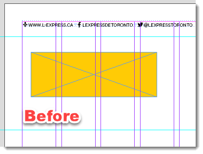
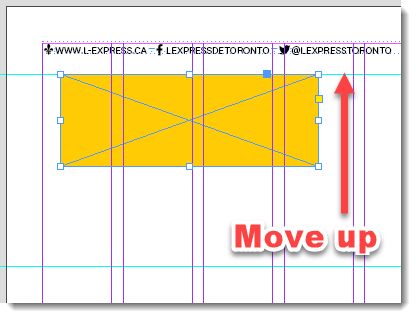
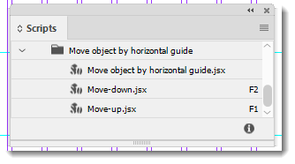
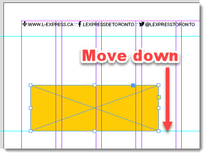

Move object by horizontal guide
This script is like the Move object by column script, but the object moves vertically up or down, from the top of the object frame according to horizontal guides.
You can select one or more objects that have bounds. They will be aligned using visual bound which is useful for objects that have thick strokes.
Warning: the script doesn’t work correctly with transformed — e.g. rotated — objects.
Here is a short screen record illustrating how it works.
The job is done by the main script — Move object by horizontal guide.jsx — which is triggered by two other small scripts using the doScript() command which sends the only argument: the moveDown variable. In Move-down.jsx script it is set to true, and Move-up.jsx to false. That’s the one and only difference between them.
In this way, I don’t have to write and maintain two or more almost identical scripts.


All three scripts should be located in the same folder

I recommend assigning keyboard shortcuts to Move-down and Move-up scripts.
Click here to download the script.

Go back to the main Scripts for L'Express de Toronto Inc. page